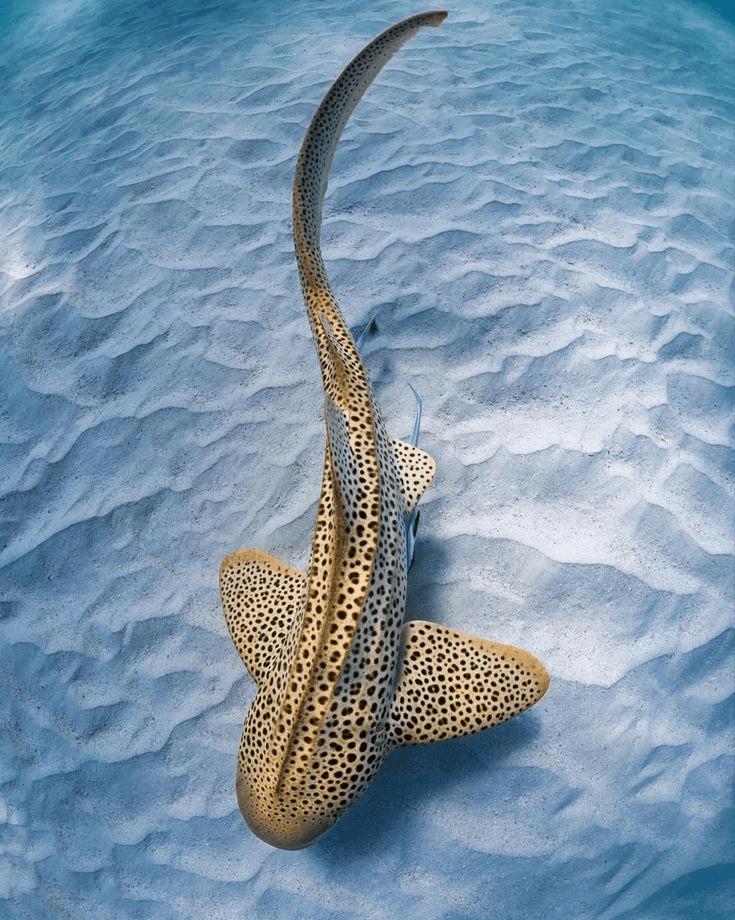
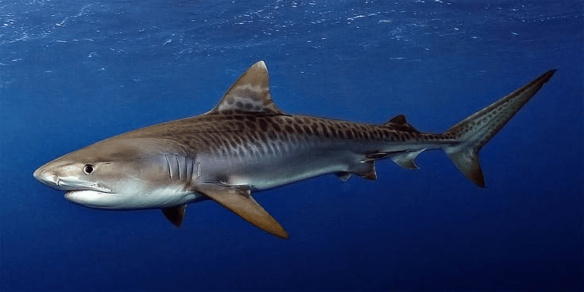
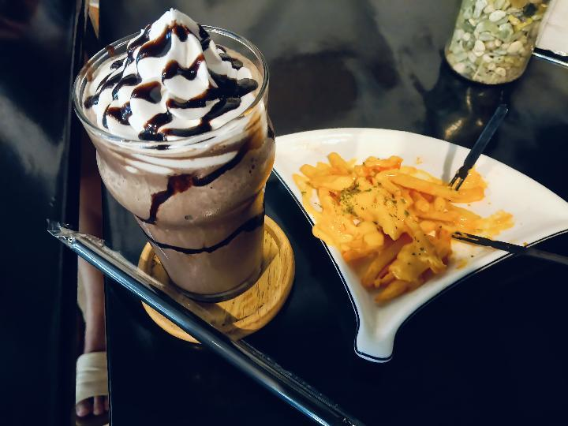

Field note 001
Ancient Survivors
Sharks have an evolutionary history stretching back more than 400 million years. Their ancestors swam long before dinosaurs appeared.
A little ocean diary dedicated to the creatures that have roamed our seas for millions of years. Dive in, curious explorer.
Welcome to MY personal shark journal! I collect little discoveries about sharks, their strange adaptations, their habitats, and the mysteries hidden beneath the waves...heh I know mysterious right?
Sharks have an evolutionary history stretching back more than 400 million years. Their ancestors swam long before dinosaurs appeared.
Sharks help maintain marine food webs. Different species have different diets, behaviors, and roles in their ecosystems.
Many sharks can detect tiny electrical signals produced by other animals, helping them locate prey even when visibility is poor.
Sharks face threats such as overfishing, habitat loss, and accidental capture. Learning about them helps us understand why conservation matters.
The ocean is full of stories. Some have fins, some have spots, and all deserve to be understood.
— A note from 5H4RK
Feel free to explore species or not
ps.. DON'T OPEN the sixth..one..
Every shark has its own story. Here are a few entries from our underwater notebook.
Rhincodon typus
The whale shark is the largest living fish. Despite its enormous size, it feeds mainly on plankton and other tiny organisms through filter feeding.
Every whale shark has a unique pattern of spots. Researchers can use these patterns to help identify individual sharks.
Carcharodon carcharias
The great white is a powerful predatory shark found in many coastal and offshore waters. It plays an important role in marine food webs.
Great white sharks can maintain some body regions warmer than the surrounding water, helping them remain active in cooler seas.
Stegostoma tigrinum
Zebra sharks often rest on the seafloor during the day and search for food at night. Adults have dark spots on a lighter body.
Young zebra sharks have dark bands instead of the spotted pattern seen in adults. Their appearance changes as they mature.
Mitsukurina owstoni
This rare deep-water shark has a long, flattened snout and a distinctive jaw that can extend forward when catching prey.
The goblin shark's unusual snout contains sensory organs that help it detect electrical signals from nearby animals.
A mini reference library for curious minds. Discover scientific names and distinctive traits.
Rhincodon typus
The largest living fish. Feeds on tiny organisms by filter feeding.
Isurus oxyrinchus
A fast, open-ocean shark with a streamlined body.
Sphyrna lewini
Its wide head helps with sensory detection and maneuvering.
Stegostoma tigrinum
A reef-associated shark with a spotted adult pattern.
Mitsukurina owstoni
Known for its elongated snout and protruding jaws.
Triaenodon obesus
Often rests in reef crevices during the day.
Research reminder: Check reliable marine science sources when adding scientific facts and conservation information to your head.
A quiet little corner for your discoveries. Use these prompts to plan your next research session.
Every explorer has a story. Here's a little introduction to the person collecting all these ocean discoveries.
Favorite food: PUDDING AND CHOCOLATE
Favorite song: Almost Worked by Tv girl and... Pretty Girl by Clairo
Favorite character: PINKIE PIE(mlp) AND BMO(Adventure Time)
Favorite place: Playground and Toystore
Favorite shark: Helicoprion and Edestus
There is always something new to discover, even in a world you thought you already knew.
This website is my own smth or idk , where I collect shark facts, keep diary entries, and celebrate the things I love..? Thank you for stopping by tho !
A little something for my own brain and feelings since i dont wanna talk to it to anyone but myself HAHAHAHA....
A collection of memories, dreams, random thoughts, of my everyday life.
Today was somewhat..boring tbh One thing that made me smile is that ITS ALMOST MY BDAY YAYYYYYY...! IM SO EXCITED ABT IT I BET THAT EVERYONES GONNA THROW A PARTYYY !! hmmm..but theres something that I kept thinking about and like what if they wont and...it sucks or smth but ehh whatever i dont care..right?
If I could remember one thing about today, it would be that life's unfair.
Until next time, diary.
Something I want to remind myself is: Even though life is kinda unfair..just don't give up..!! You can surpass this I hope but JUST KEEP ON LIVIN !!
With hatred, me
Today, I want to remember the little things I love: I really love pudding ooo and also chocolate mmmm yummmmm, I enjoy listening to tv girl and clairo....buttttt i listen to any song tho haha.., Hehe...I love my boyfried so much vro like AAA ooo his name is dio >o< !! , and I LOVE SLEEPINGGG.
Even small moments can become memories worth keeping.
End of entry.
If you could send a letter to your future self, what would you want them to know?
Click or tap “Open shark info” on any picture to discover more. Each species has a few details worth noticing.






meow
Draw a shark, sketch an underwater world, or doodle anything you like.
Use your mouse, finger, stylus, or anything to draw.(currently not working..)
.jpg)
